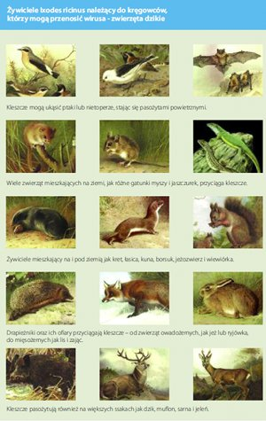
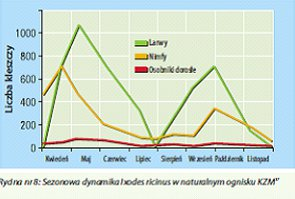

Profilaktyka
Sprawdź jak się chronić przed Kleszczowym Zapaleniem Mózgu i innymi chorobami odkleszczowymi.
Jak się zabezpieczyćO kleszczach
Na świecie znanych jest około 800 gatunków kleszczy.
W Polsce do tej pory stwierdzono występowanie 20 gatunków. Większość rodzimych gatunków kleszczy zamieszkuje nory bądź gniazda zwierząt i nie stanowi realnego zagrożenia dla ludzi.
Największe znaczenie dla człowieka i domowych zwierząt mają dwa gatunki kleszczy:
- kleszcz pospolity (Ixodes ricinus),
- kleszcz łąkowy (Dermacentor reticulatus).
Optymalne warunki do życia kleszczy to obrzeża lasów wraz z przylegającymi do nich użytkami zielonymi, polanach, nadrzecznych łąkach i bagnach, plantacjach lasów zawierających chrust i krzewy, na przejściu pomiędzy lasem liściastym i iglastym.
{kind=link}
Ponadto lasy złożone z dębów i grabów, jak również lasy bukowe i jodłowe z bogatym podszyciem składającym się z chwastów, paproci, bzu czarnego, leszczyny oraz krzewów jeżyny.
Kleszcze zapadają w sen zimowy schowane pod liśćmi ściółki leśnej, gdzie temperatura może wynosić 0°C lub mniej, oraz gdzie wilgotność względna jest na poziomie 92%.
Jaja oraz wygłodniałe larwy giną w temperaturach niższych niż -7°C. Powszechnie występujący kleszcz pospolity jest pasożytem bytującym na ponad 100 różnych gatunkach ssaków, gadów i ptaków.
{kind=link}
Aktywność kleszczy rozpoczyna się w marcu lub kwietniu, kiedy gleba osiąga temperaturę 5-7°C i kończy się, gdy średnia temperatura powietrza obniży się do powyższych, co ma miejsce w październiku lub listopadzie.
W Europie Środkowej obserwuje się dwuszczytową krzywą częstości występowania z maksymalną aktywnością przypadającą na maj lub czerwiec oraz wrzesień lub październik.
Warunki klimatyczne są kolejnym czynnikiem determinującym dynamikę kleszczowego zapalenia mózgu. Nawet jeśli głównych nieciągłości dotyczących zachorowalności na KZM nie można wyjaśnić w satysfakcjonujący sposób wzrostem temperatury, to jednak sezonowe przesunięcia w liczbie zgłaszanych przypadków KZM w Europie Środkowej i Północno-Wschodniej sugerują, iż dynamika przenoszenia wirusa KZM uległa zmianie – być może jako wynik występowania wyższych temperatur. Chociaż występowanie KZM nie zależy od temperatury w sposób bezpośredni i różne czynniki mogą mieć znaczenie w tym przypadku, to jednak wpływ ocieplenia klimatu na pionowe rozprzestrzenianie się choroby w Europie Środkowej jest ewidentne.
Atakując, znieczulają miejsce wkłucia, by spokojnie żerować nawet przez kilka dni. W czasie ukłucia i wysysania krwi przenoszą groźne choroby zakaźne. Zobacz film
{kind=link}
MIT!
Kleszcze nie żyją na drzewach i nie skaczą na przechodzących żywicieli. Przesiadują na spodniej stronie liści głównie na ich końcach lub na gałęziach w pobliżu ścieżek i śladów dzikich zwierząt, skąd są ściągane przez żywicieli.
Larwy kleszczy spotykane są zazwyczaj w trawie do 30 cm, nimfy na trawach i roślinach niższych niż 1m a imago (postać dorosła) na chwastach i krzewach do 1,5m wysokości